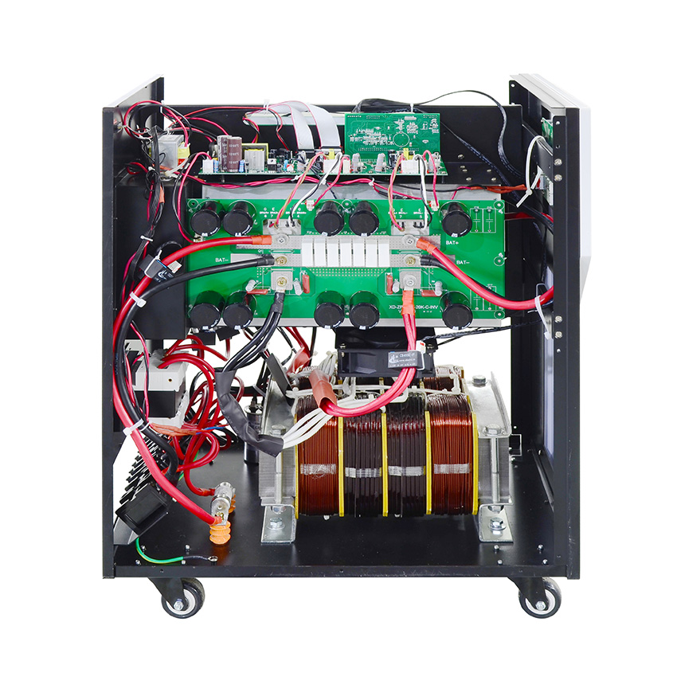
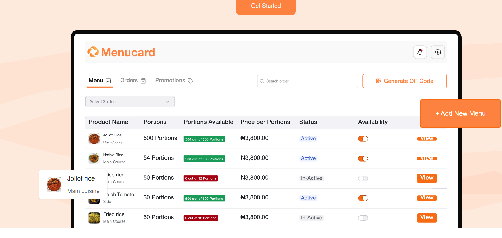
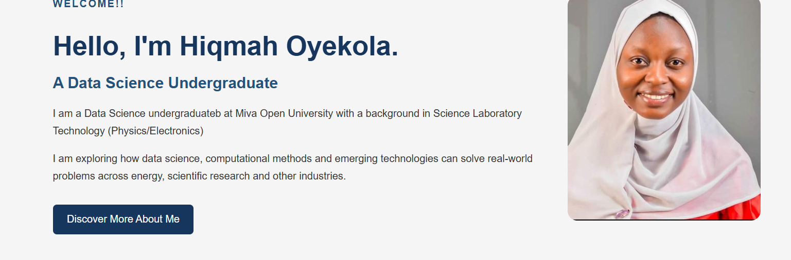

Non-Battery Solar Inverter
Category: Academic Project
An academic project focused on exploring
a solar inverter system that converts
direct current (DC) power to alternating
current (AC) without using a battery.
The project involved voltage regulation
using a buck converter and microcontroller
components.
Status: Completed Academic Project

Menucard – Product Marketing
Category: HNG Project (Product Managent/Marketing)
A product marketing project focused on
Menucard, a digital platform designed to
help restaurants manage menus and simplify
customer ordering through QR-code technology.
Explore Menucard

Personal Portfolio Website
Category: Web Development
A personal portfolio website developed
using HTML and CSS to present my academic
background, interests, projects and
learning journey.
Status: In Progress
View portfolio homepage